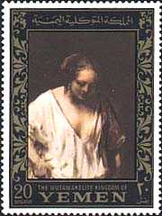
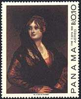
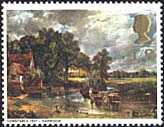
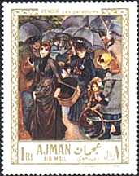

National Gallery, London
You can admire below not only some of the best works of art ever created,
but also one of the best investments ever made by a British government. In
1824, when the reigning monarch was George IV, an enlightened patron of
arts, and the Prime Minister the Earl of Liverpool, the government decided
to purchase 38 paintings from the Angerstein collection and with them create
a National Gallery.
Over the years since then the National Gallery has
continued to benefit from sustained state support, allowing major purchases
to go on being made. It has also benefited, since its earliest days, from
generous private support, chiefly in form of giftd and bequest of paintings.
Today it has matured into being one of the finest and most famous public
collections of European paintings in the world. The Collection is still,
fortunately, not vast in number but is perhaps unparalleled choiceness and
balance in its representation of all major schools of painting. (Michael
Levey, Director, 1973-1986).

Michelangelo Merisi da Caravaggio, 1573-1610. The Supper at Emmaus. Christ, portrayed as an effete, beardless youth with a sensual face, has just blessed the bread and wine, thereby revealing to the two disciples that he is not a fellow pilgrim but the resurrected Saviour.
|
|
 |

Rembrandt, 1606-1699. Self-Portrait, 1631. Rembrandt based his self-portrait at the age of thirty-four, on Titian's Portrait of a Man (see below). He shows himself as a slightly effete and even opulent young man. The face is highlighted by dramatic contrast between light and shade, the famous Rembrandt chiaroscuro. A Woman Bathing in the Stream. From about 1649 onwards Rembrandt lived with Hendrickje Stoffels. She seems to have been the model for this small oil sketch of a woman who has thrown aside a rich robe and is tentatively stepping into the water. More on Rembrandt.
 |
 |
 |
Titiano
Vecellio, called Titian. Active before 1511, died 1576. Portrait of a
Man. It has been suggested that this is a self-portrait, although during
the 17th century it was thought to represent Ariosto, the author of Orlando
Furioso. More
about Titian.
Sir Peter Paul Rubens, 1577-1640. Le Chapeau de
Paille. Click here for
more information about this wonderful masterpiece.
Francisco de Goya, 1746-1828. Doña Isabel de
Porcel. Goya said that he worked from Nature, Velasquez and Rembrandt.
Doña Isabel, a friend of the Painter, is shown with her hands held proudly
on her hips, her head held high. The full features of her face, which
catches the light, are highly finished with rosy tints. We can be sure that
Doña Isabel really was very beautiful, since Goya never flattered his
sitters, and he never shrank from portraying ugliness.
 |
 |
John
Constable, 1776-1837. The Hay Wain. It is ironic that what
perhaps the most popular English landscape painting was not appreciated by
the English public when it was first exhibited at the Royal Academy in 1821.
Constable has chosen a high viewpoint with a strong diagonal emphasis, to
create a peaceful, rural idyll, in order to investigate in detail the
phenomena of the natural world, and the changing effect of nature,
particularly of light.
Meyndert Hobbema, 1638-1709. The Avenue,
Middelharnis, 1689.
Please click here
for more information about the painter and the presented masterpiece.
|
 |
 |

Edgar Degas, 1834-1917. Miss Lala in the Paris Circus
Fernando, 1879. Please click here
for more information about the painter and his work..
Vincent van Gogh, 1853-1890. Sunflowers. Please click here
for more information.
Pierre-Auguste Renoir, 1841-1919. Les
Parapluies. There is in this paintings, as with many Renoir's paintings,
narrative human interest. It has just started to rain, and we are left with
dramatic uncertainty. Will the bare-headed girl accept shelter from the man
immediately behind her. Or perhaps from the painter himself? (After Dillian Gordon).
Link on this site to: Renoir
| Created 03/31/2000. Revised: 01/06/01. Copyright © 1999 - 2000 by Victor Manta, Switzerland. All rights reserved in all countries. |
|